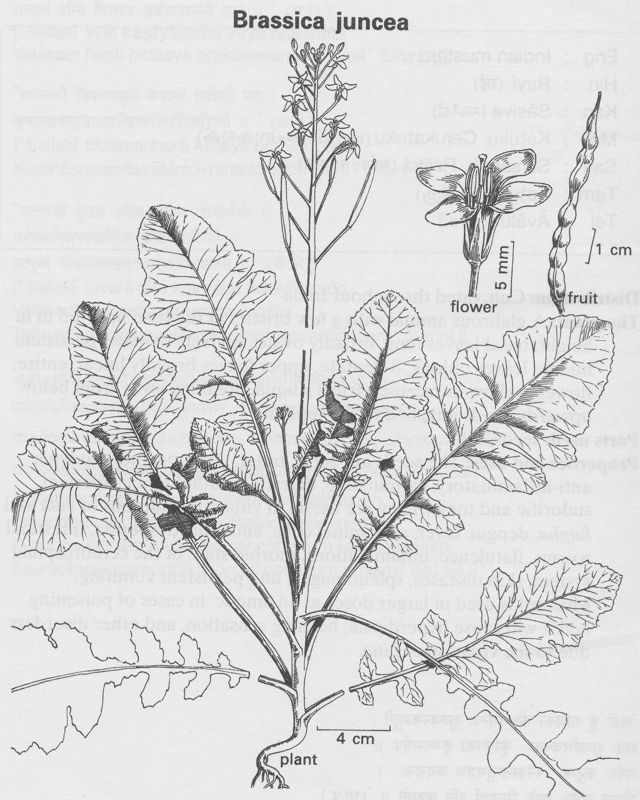

|
ECONOMICALLY
IMPORTANT PLANTS OF INDIA |
| Under-utilized Food and Fodder species and their wild relatives | Contributed by Ms.M.L Annapurna And Dr. Dhanapal, UAS, Bangalore |
Brassica juncea

REPRODUCTIVE
BIOLOGY
Lower leaves petiolate , often lyrate,4.7 x 2.5-4cm, upper ones more or less
sessile, entire smaller. Flower yellow. Sepals spreading. Anthors ablong. Stigma
truncate. Siliqua long,with an empty beak(Flora of Karnataka Vol-1). Brassica
juncea Czern. & Coss.is a highly self fertile species.
Breeding System :
It is a cross pollinated crop and is monoceious. By the aplication of the pureline
method of breeding, the department of Agriculture in the Punjab, the U.P.and
Bengal have evolved superiorstrains suited to the respective provinces.
Phenology:
It is in flower from september- february.
Flowering occurs during September- February. (Source:
Flora of Medak district (A.P) 0 T. Pullaiah, C. Prabhakar, B. Raviprasad Rao)
Flowering also occurs during February-June. (Source: Flora of West Bengal)
There are reports of flowering occurs throughout the year. (Source: The Flora
of the Palni Hills K. M. Matthew)
Pollinators
:
They are pollinated by Bees.
Seed Biology:
Seed Germination :
Seed - sow in situ from early spring to early autumn in order to obtain a succession
of edible leaves. Most varieties of Oriental vegetables belonging to this species
are best sown from late June to early September otherwise they may bolt.
There are about 5,660 - 6,000 per 0.01 kg (1/3 oz).
Cultivation:
Succeeds in full sun in most well-drained moisture-retentive fertile
soils. Prefers a heavy soil and some shade. Dislikes very
hot weather. Plants tolerate high rainfall and, although fairly deep rooted,
are not very drought resistant. Tolerates a pH in the range 4.3 to 8.3.
Brown mustards is widely cultivated for its edible
seed which is used to make the condiment 'brown mustard' and is also sprouted
as the mustard and cress. It has only 70% of the pungency of black
mustard (B. nigra) but can be harvested mechanically so is more viable commercially.
This species has also been cultivated in the Orient for many hundreds of years
and a wide diversity of forms has been developed with edible leaves, stems,
roots and seeds.
Plants take from 2 - 5 months from sowing to maturity, depending on the season and the cultivar. They prefer a fairly high stable temperature and are well adapted to short day length. Many are best grown in warmer climates than Britain but there are several cultivars that grow well in this country.
Plants have a rooting depth of between 90 - 120 cm.
Cultivars:
'' There are many named varieties of this annual vegetable, with new forms being
developed each year. At present there is not time to enter these in the database
and it is recommended that you consult the book 'The Fruit and Vegetable Finder'
which is updated regularly and can be obtained from libraries."
The botanists have classified these forms as follows
and separate entries have been made for each of them.
B. juncea crispifolia. The curled or cutleaf mustards, this group has attractively curled edible leaves.
B. juncea foliosa. The leaf mustards have quite large smooth-edged edible leaves.
B. juncea japonica. Rather similar to B. juncea crispifolia and combined with that group by some botanists.
B. juncea multiceps. The multishoot mustard group.
B. juncea napiformis. A form with a swollen edible root.
B. juncea rugosa. Large somewhat cabbage-like edible leaves.
B. juncea strumata. A form with large edible leaf stalks.
B. juncea tumida. A form with swollen edible stems.
Harvesting
Practices and yeild: Parts used Uses:
1.Leaves - raw or cooked. A peppery flavour that can range
from mild to hot, this is one of the most highly prized cooked vegetables in
the Orient. The leaves can also be eaten raw, when finely shredded they
make a very acceptable addition to mixed salads. The protein extracted
from the leaves mixes well with banana pulp and is well adapted as a pie
filling.
MAJOR PESTS AND DISEASES
The crop is hardy and appears to be less susceptible to insect pests and diseases
than other Indian oleiferous brassicas.
Economic
Potential and Uses
Seeds, Condiment; Flowers; Leaves; Oil; Root;
2.Flowers and young flowering stems - raw or cooked. Sweet and succulent.
3.An edible semi-drying oil is obtained from the seed. The seed contains 25 - 30% oil.
4.The seed is used as a mustard flavouring. It is the source of 'brown mustard'[183], a prepared mustard that is milder than that produced from other species. Pungency of mustard develops when cold water is added to the ground-up seed - an enzyme (myrosin) acts on a glycoside (sinigrin) to produce a sulphur compound. The reaction takes 10 - 15 minutes. Mixing with hot water or vinegar, or adding salt, inhibits the enzyme and produces a mild bitter mustard. Black mustard comes from B. nigra and white mustard from Sinapis alba.
5.The seed is also used whole in curries and pickles. They are often heated in oil to destroy their pungency and give them a nutty flavour.
6.The root of some forms of this species is edible.
7.Sprouted seeds can be added to salads.
Chemistry
The seeds contain: moisture, 6-2; fat, 35-5; nitrogenous substances, 24.6; N-free
extract, 20-4 ; crude fibre, 8-0 ; and ash, 5-3% (Wehmer, I, 408). The oil content
of the seeds is usually 30-38%. Certain forma cultivated in the U.P.and locally
known as lahi, laha, and lahta have a higher oil content (42-43%). Commercial
rai also contains some sarson. Some samples contain the seeds of var. crispifolia
Bailey, which resemble those of var. rugosa. Seed (Fresh weight) :
In grams per 100g weight of food:Fat: 30
1.Rai yields less fatty oil than either toria or sarson. The oil is much purer and clearer than rape oil and does not have the peculiar rancid smell of the latter (for constants of the oil, see Table II). In Bengal it is much-relished .as cooking oil. In Russia, it is used in place of olive oil.
2.Rai is an efficient substitute for black mustard. The U.S.P. recognizes this species also as mustard. Brown mustard and the 'expressed oil of mustard, prepared from the seed of B. juncea are included in the I.P.L. The former should contain not loss than 0-6% of allyl isothiocyanate.
3.There is some evidence that if this plant is grown as a green manure it is effective in reducing soil-borne root rots in pea crops. This is attributed to chemicals that are given off as the plants decay.
4.Although not usually used medicinally, the seed is a warming stimulant herb with antibiotic effects.
5.Reported to be anodyne, aperitif, diuretic, emetic,
rubefacient, and stimulant, Brown Mustard is a folk remedy for arthritis, foot
ache, lumbago, and rheumatism. The seed
is used in the treatment of tumours in China. In Korea, the seeds are used
in the treatment of abscesses, colds, lumbago, rheumatism, and stomach
disorders. The root is used as a galactagogue in Africa. Ingestion may impart a body odour repellent
to mosquitoes.
Mustard oil is used in the treatment of skin
eruptions and ulcers. Believed to be aperient and tonic, the volatile oil
is used as a counterirritant and stimulant.
In Java the plant is used as an antisyphilitic
emmenagogue. Leaves applied to the forehead are said to
relieve headache. The Chinese eat the
leaves in soups for bladder, inflammation or haemorrhage.
1.Chittendon F, RHS Dictionary of Plants plus Supplement. 1956 Oxford University Press 1951
2.Clapham, Tootin and Warburg. Flora of the British Isles. Cambridge University Press 1962
3.Details of Scandanavian and European Common names in Henriette's names database
4.Data (Latin & Common names, other references) from the BONAP's Synonymized Checklist of the Vascular Flora of the United States, Puerto Rico, and the Virgin Islands.5.Data (Common Names, Uses, Distribution) from the USDA/ARS NPGS's GRIN taxonomic database.
6.Data. (uses, distribution, wetland) from the UDSA's plants database.
7.Details of Scandanavian and European Common names in Henriette's names database
8.Data (Common Names, Uses, Distribution) from the USDA/ARS NPGS's GRIN taxonomic database.
9.Data (Common Names, Uses, Distribution) from the USDA/ARS NPGS's GRIN taxonomic database.
10.Data. (uses, distribution, wetland) from the UDSA's plants database.
11.Data (Common Names, Uses, Distribution) from the USDA/ARS NPGS's GRIN taxonomic database.
12.Details of Scandanavian and European Common names in Henriette's names database
13.Hedrick. U. P. Sturtevant's Edible Plants of the World. Dover Publications 1972 ISBN 0-486-20459-6
14.Hill. A. F. Economic Botany. The Maple Press 1952
15.Komarov. V. L. Flora of the USSR. Israel Program for Scientific Translation 1968
16.Larkcom. J. Salads all the Year Round. Hamlyn 198017.Rice. G. (Editor) Growing from Seed. Volume 1. Thompson and Morgan. 1987
18.
Usher. G. A Dictionary of Plants Used by Man. Constable 1974 ISBN 0094579202